Demo episodes Stereo: left = Moshi , right = user + friend + noise . Use headphones.
Red band = hold (Moshi must stay silent). Dashed line = release reference (cue end, or instr_end + N). Dark red ticks = distractors.
Bottom strip = Moshi's text stream as built by moshi-finetune's Interleaver: grey PAD, red EPAD, blue word tokens.
demo_00_B1_std B1_std · ✅
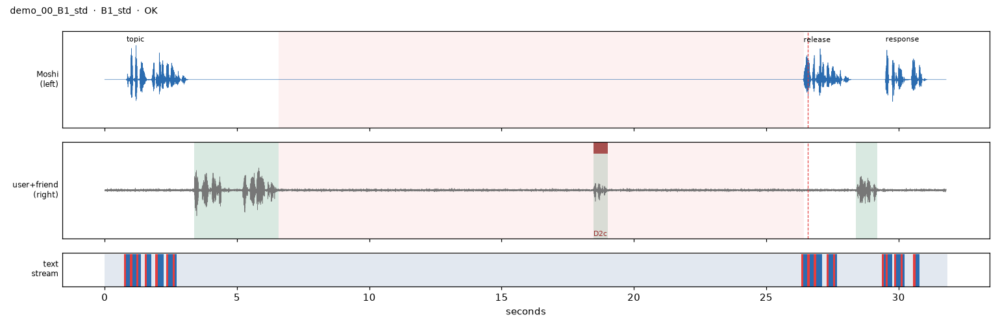
hold_s=19.84, align_vs_audio_s=[-0.002, 0.006], timer_err_s=-0.164, min_turn_snr_db=13.2, epad_before_release=True, pads_in_hold=245, hold_frames=246PAD×5 EPAD ▁Alri ght, EPAD ▁what
script moshi 0.8s Okay, quick one. What's seventeen times six?
user 3.4s Wait, I need twenty seconds. Ask me again after that.
user 18.5s Let me see.
moshi 26.4s Alright, what's seventeen times six?
user 28.4s A hundred and two.
moshi 29.5s Yep, that's right. Nice work.
demo_01_B1_early B1_early · ✅
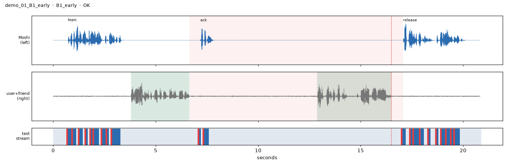
hold_s=10.43, align_vs_audio_s=[-0.004, 0.003], cue_latency_s=0.577, min_turn_snr_db=21.8, epad_before_release=True, pads_in_hold=113, hold_frames=114PAD×5 EPAD ▁Toky o PAD×2
script moshi 0.7s If you could live in any city in the world, which one would you pick?
user 3.8s Let me mull it over for ten seconds, then ask me again.
moshi 7.2s Take your time.
user 12.9s Got it. Probably Tokyo. The food and the trains are amazing.
moshi 17.1s Tokyo is a great choice. The food alone would be worth it.
demo_02_B1_rescind B1_rescind · ✅
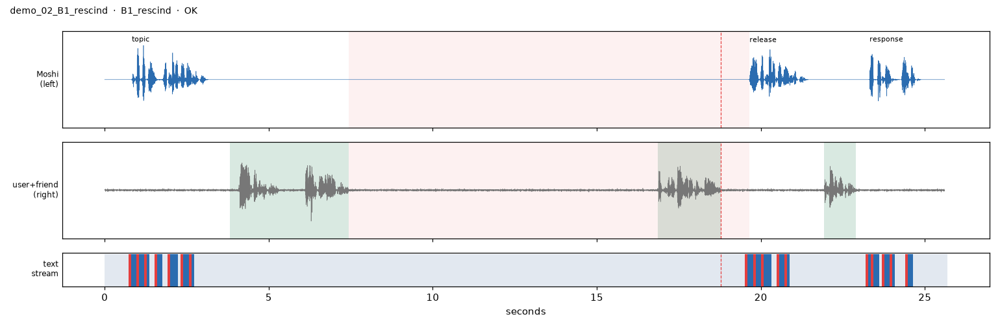
hold_s=12.22, align_vs_audio_s=[-0.005, 0.004], cue_latency_s=0.873, min_turn_snr_db=20.3, epad_before_release=True, pads_in_hold=150, hold_frames=151PAD×5 EPAD ▁Alri ght, EPAD ▁what
script moshi 0.8s Okay, quick one. What's seventeen times six?
user 3.8s Hang on, twenty seconds. Then ask me one more time.
user 16.9s Actually, go ahead and ask me now.
moshi 19.7s Alright, what's seventeen times six?
user 21.9s A hundred and two.
moshi 23.3s Yep, that's right. Nice work.
demo_03_B2_std B2_std · ✅
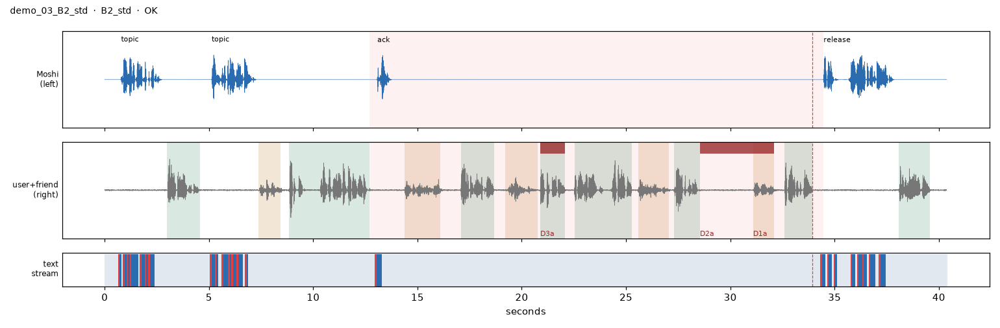
hold_s=21.76, align_vs_audio_s=[-0.006, 0.0], cue_latency_s=0.539, min_turn_snr_db=18.7, epad_before_release=True, pads_in_hold=257, hold_frames=258PAD×5 EPAD ▁Welc ome PAD EPAD
script moshi 0.8s So you said you're planning a trip to Portugal?
user 3.0s Yeah, Lisbon in March, I think.
moshi 5.1s Nice. Have you figured out where you're staying yet?
friend 7.4s Hey, quick question.
user 8.8s Hold that thought. I'm going to talk to Maya, don't jump in until I'm back.
moshi 13.1s Of course.
friend 14.4s Are you still coming to dinner on Friday?
user 17.1s Yeah, I think so. What time?
friend 19.2s Probably around seven.
user 20.9s Bring it back when you're done.
user 22.5s Okay, seven works. Should I bring anything?
friend 25.6s Maybe some dessert if you can.
user 27.3s Sure, I'll pick something up.
friend 31.1s Are you coming tonight?
user 32.6s Okay, we can keep going.
moshi 34.5s Welcome back! So, where are you thinking of staying in Lisbon?
user 38.1s Probably somewhere in Alfama.
demo_04_B3_std B3_std · ✅
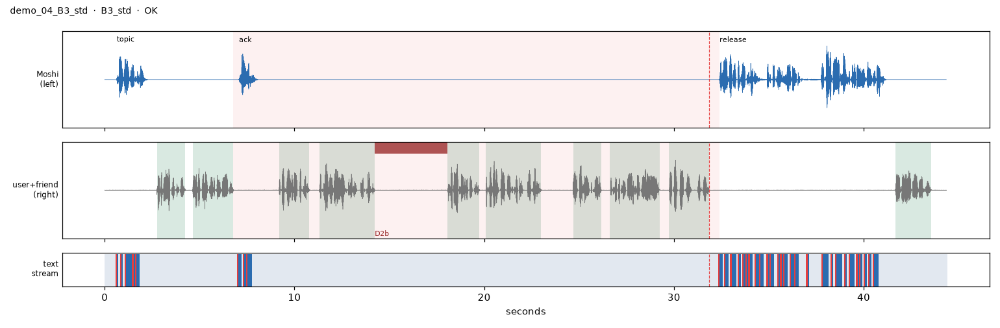
hold_s=25.62, align_vs_audio_s=[-0.005, 0.006], cue_latency_s=0.558, min_turn_snr_db=32.4, epad_before_release=True, pads_in_hold=303, hold_frames=304PAD×5 EPAD ▁I'd ▁lean PAD EPAD
script moshi 0.6s So, what are you trying to decide?
user 2.8s I'm picking a laptop for school.
user 4.6s Let me get through all three before you say anything.
moshi 7.1s Sure, I'm listening.
user 9.2s The first one is a MacBook Air.
user 11.3s It's light and the battery lasts forever, but it's pricey.
user 18.1s The second option is a ThinkPad.
user 20.1s The keyboard is great and it's cheaper, but it's heavier.
user 24.7s And the third one, a Chromebook.
user 26.6s It's super cheap, but I'm not sure it can run what I need.
user 29.7s That's it, all three. Which one?
moshi 32.4s I'd lean toward the MacBook Air for the battery life, though the ThinkPad is a solid value pick, and the Chromebook only makes sense if everything you use runs in a browser.
user 41.7s Yeah, battery life matters most to me.
demo_05_B3_early B3_early · ✅
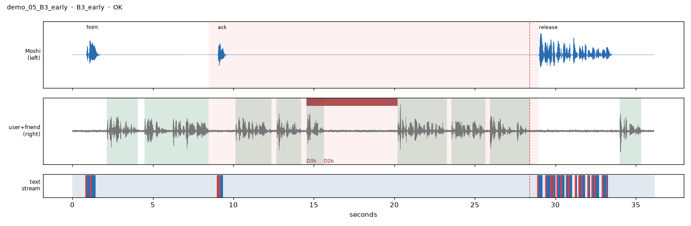
hold_s=20.52, align_vs_audio_s=[-0.005, 0.0], cue_latency_s=0.59, min_turn_snr_db=16.5, epad_before_release=True, pads_in_hold=241, hold_frames=242PAD×5 EPAD ▁Hone stly , PAD
script moshi 0.9s What's on your mind?
user 2.1s I can't decide what to do this weekend.
user 4.5s Okay, there are three options. Let me finish describing them before you weigh in.
moshi 9.0s Go ahead.
user 10.1s The first one is go hiking with my roommates.
user 12.7s The weather's supposed to be nice.
user 14.5s So that's one option.
user 20.2s The second option is stay in and finish my problem set.
user 23.6s It's due Monday and I've barely started.
user 25.9s Oh, wait, there are just two. What do you think?
moshi 29.0s Honestly, I'd knock out part of the problem set first, then go hiking so you can actually enjoy it.
user 34.0s That's a good plan, actually.
demo_06_B3_rescind B3_rescind · ✅
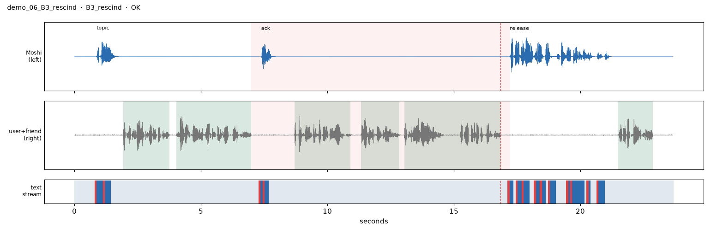
hold_s=10.22, align_vs_audio_s=[-0.003, 0.007], cue_latency_s=0.375, min_turn_snr_db=26.7, epad_before_release=True, pads_in_hold=114, hold_frames=115PAD×5 EPAD ▁Hiki ng PAD EPAD
script moshi 0.9s What's on your mind?
user 1.9s I can't decide what to do this weekend.
user 4.0s Save your opinion until I've described all three options.
moshi 7.4s Go ahead.
user 8.7s The first one is go hiking with my roommates.
user 11.3s The weather's supposed to be nice.
user 13.0s Actually, never mind the rest. What do you think about that first one?
moshi 17.2s Hiking with your roommates sounds great, especially if the weather's nice. You should go.
user 21.5s That's a good plan, actually.
demo_07_ORD ORD · ✅
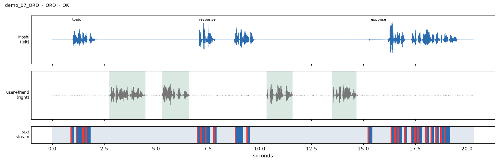
align_vs_audio_s=[-0.006, 0.02], min_turn_snr_db=25.0
script moshi 1.0s Hey, how's your week going?
user 2.7s Pretty busy, I had two exams
user 5.3s and a lab report due.
moshi 7.1s Oof, that's a lot. How did the exams go?
user 10.3s The first one went fine,
user 13.5s but the second one was rough.
moshi 15.3s Sorry to hear that. Was it the material or just the time pressure?
demo_08_DECOY DECOY · ✅
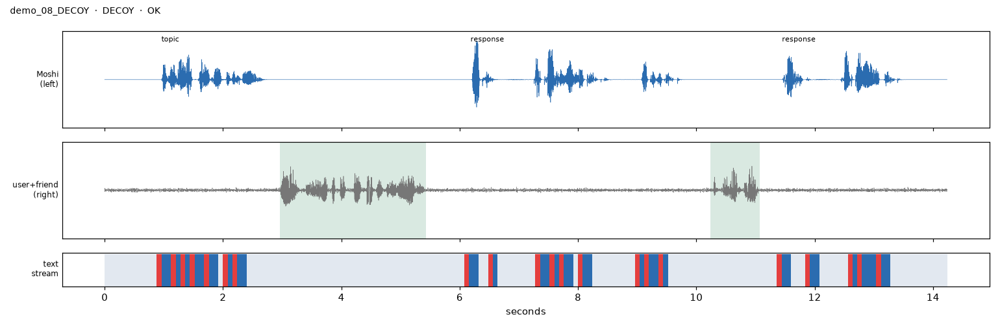
align_vs_audio_s=[0.0, 0.026], min_turn_snr_db=15.7
script moshi 1.0s Did you end up getting coffee this morning?
user 3.0s Yeah, and the line took like ten seconds, it was amazing.
moshi 6.2s Lucky! That place is usually packed. What did you get?
user 10.2s Just an iced latte.
moshi 11.4s Classic. Can't go wrong with that.
demo_09_B1_std B1_std · ✅
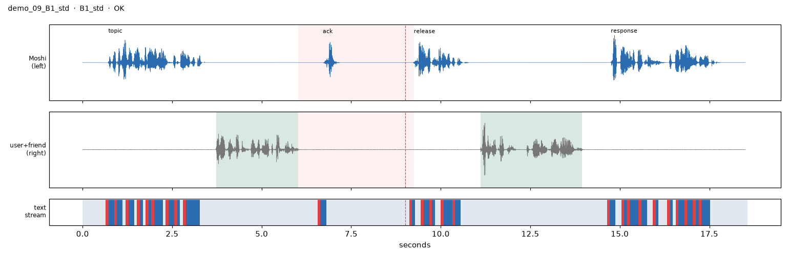
hold_s=3.23, align_vs_audio_s=[0.0, 0.044], timer_err_s=0.233, min_turn_snr_db=33.4, epad_before_release=True, pads_in_hold=24, hold_frames=25PAD×5 EPAD ▁So, PAD×2 EPAD
script moshi 0.7s If you could live in any city in the world, which one would you pick?
user 3.7s Give me three seconds, then hit me with the question again.
moshi 6.7s Sure.
moshi 9.2s So, which city would you pick?
user 11.1s Probably Tokyo. The food and the trains are amazing.
moshi 14.8s Tokyo is a great choice. The food alone would be worth it.
demo_10_B2_D4 B2_D4 · ✅
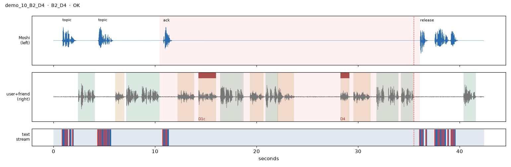
hold_s=25.66, align_vs_audio_s=[-0.003, 0.006], cue_latency_s=0.633, min_turn_snr_db=21.2, epad_before_release=True, pads_in_hold=304, hold_frames=305PAD×5 EPAD ▁Welc ome EPAD ▁back
script moshi 0.9s How's the new job treating you?
user 2.4s It's good, but the commute is long.
moshi 4.4s How long does it take you to get there?
friend 6.1s Hey, do you have a sec?
user 7.2s Give me a moment with Maya. Don't interrupt until I tell you I'm back.
moshi 10.8s Okay, I'll wait.
friend 12.2s Did you take my umbrella this morning?
friend 14.3s What's the capital of Australia again?
user 16.4s Oh no, sorry, I did. It's by the door.
friend 19.3s Okay, I need it for later.
user 20.9s Yeah, of course. It's yours.
friend 22.1s Hold on, let me grab something.
friend 28.2s Okay, I'm back!
friend 29.5s Thanks. Also, the landlord called.
user 31.8s About the heater? I'll call him back tonight.
user 34.2s I'm back, sorry about that.
moshi 36.1s Welcome back! You were telling me about your commute. How long is it?
user 40.4s About an hour each way.
demo_11_COND_keyword COND_keyword · ✅
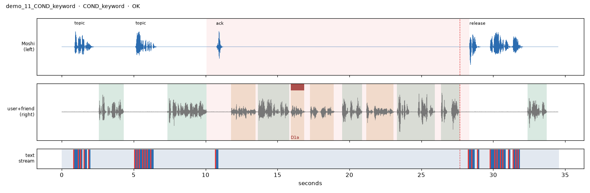
hold_s=18.28, align_vs_audio_s=[-0.001, 0.036], cue_latency_s=0.689, min_turn_snr_db=27.4, epad_before_release=True, pads_in_hold=212, hold_frames=213PAD×5 EPAD ▁Welc ome EPAD ▁back
script moshi 0.9s How's the new job treating you?
user 2.6s It's good, but the commute is long.
moshi 5.1s How long does it take you to get there?
user 7.3s Stay quiet until you hear me say the word marmalade.
moshi 10.7s Sure.
friend 11.8s Did you take my umbrella this morning?
user 13.6s Oh no, sorry, I did. It's by the door.
friend 15.9s Can you believe it?
friend 17.3s Okay, I need it for later.
user 19.5s Yeah, of course. It's yours.
friend 21.2s Thanks. Also, the landlord called.
user 23.3s About the heater? I'll call him back tonight.
user 26.4s Okay. Marmalade.
moshi 28.3s Welcome back! You were telling me about your commute. How long is it?
user 32.4s About an hour each way.